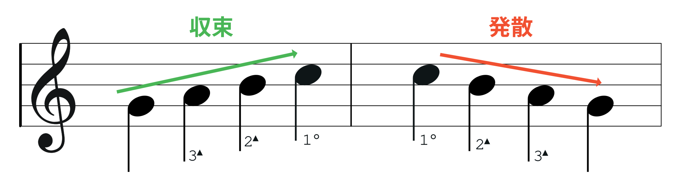
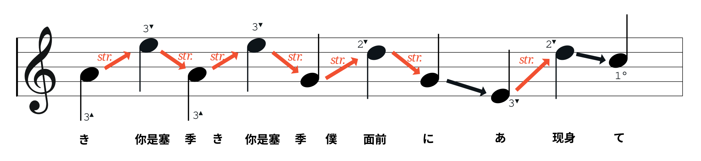
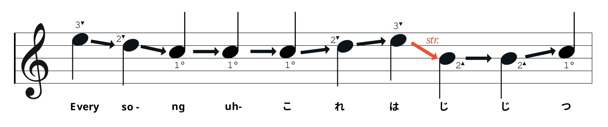
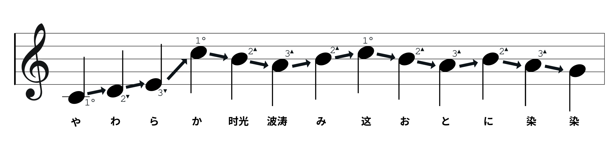
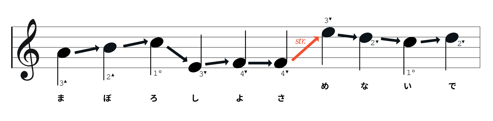

在准备篇中我们曾提到：音阶与调性中存在着一个“中心”，当旋律终结并落脚于此时，我们会获得真切的“着陆归宿感”。歌曲的核心枢纽之音，被称为中心音（Tonal Center）。虽然这一概念符合直觉，但此前我们并未展开系统化的深入论证。本讲的内容，正是为了在微观实战层面上将其彻底清晰化。
 1. 与中心音的相对关系
1. 与中心音的相对关系
若从宏观的叙事格局审视，在旋律线条的起承转合中，抵达中心音是最关键的乐段分界标尺——如同文学中的“句号”一般，是指引作曲构思与作品分析的核心航标。
因此本次我们换一个视角，暂且搁置绝对的方向上下或节拍切入点，重点考察：从中心音的视角来看，旋律到底在如何运动？ 例如，“Sol - La - Ti - Do”与“Fa - Mi - Re - Do”，虽然一个是上行、一个是下行，走向截然相反；但就“顺畅平滑地向着中心音落定着陆”这一声学动作而言，两者在本质上完全如出一辙。

阅读和弦篇第 I 章就会发现，和弦同样存在着“着陆”这一核心概念，它是构筑和弦进行时的重要罗盘。既然和声如此，旋律理论中理应也拥有一套与之等量齐观的完备系统。
2. 收束（Converge）与发散（Diverge）
继“上行 / 下行”以及“级进 / 跳进”之后，剖析旋律音高动势的另一大核心维度，便是观察其相对于中心音是“靠近的运动”还是“远离的运动”。

同样是“跳进上行”：跳进上行回归并落入中心音，与跳进上行毅然背离中心音飞向远方，所赋予听众的心理印象和勾勒的叙事弧线有着天壤之别。前者象征着历经冒险后向大本营的“凯旋与归宿”，而后者则象征着挣脱束缚、开辟全新故事线索的“出征与启程”。
确立术语定义
然而，与“级进 / 跳进”等通用术语不同，以往在传统通用教材中，针对这种相对向心/离心运动一直缺乏普及度极高的专有词汇。但这在旋律论中又是绝对无法回避的核心支柱，因此我们确立并引入一套统一的精准命名：
在自由派音乐理论中，将朝向中心音靠近的运动定义为收束（Converge），将远离中心音的运动定义为发散（Diverge）。


为了更易于理解，我们在乐谱上标注了“距中心音的度数”与“中心音的指向”。“收束”与“发散”衡量的是与中心音的几何距离，因此哪怕不是级进，只要跳进的结果是拉近了与中心音的距离，就同样属于“收束”；反之亦然。

尤其观察左侧乐谱：虽然最近的中心音发生了八度位置转移，但旋律到中心音的距离实实在在地从“3度”缩短到了“2度”，因此依然属于严谨的“收束”。
“收束”是将乐句推向归宿与终点的动作，而“发散”则是将乐句推向展开与扩张的动作，两者构成了性质截然对立的阴阳两极。虽然旋律听感还会受到其他维度的综合干涉，但大体而言：“发散”往往是激发起音乐“紧张与期待”的开拓性动作，而“收束”则是带来“舒缓、释怀与尘埃落定”的闭合性动作。
3. 终止与跨越（Stride）
在旋律剖析的武器库中，还有几个极其关键的特征动作。在此我们继续补充两个核心概念：
在自由派音乐理论中，将旋律最终真正抵达中心音的动作、乃至抵达前相继行进的这一小串关键音符，借用和声学术语统称为终止（Cadence）。 进一步地，将直接跨过中心音、飞跃至其另一侧的剧烈跳进，明确命名为跨越 / 跨步大跳（Stride）。“Stride”原意为“大步跨越、大踏步迈过”。

“跨越（Stride）”特意绕开本应着陆的中心音，直接一步跨到分界线的另一端，因而在艺术表现上具有非同寻常的戏剧爆发力。

对比“有无跨越（Stride）”的旋律形态： 首先，直接越过中心分界线，能带来出人意料的惊艳意外感（Surprise）。 其次，这也意味着旋律必须从上、下两个相反方向轮番对中心音发起逼近冲刺，从而使整条旋律线条在落定前激荡起波澜起伏的波状涌动，在声学体验上极具刺激感。 而在情感表达层面，由于旋律在一气呵成之间连续横跨中心音上方与下方的两大音区（而不被中心音这一“句号”打断切碎），极度契合表达内心剧烈的起伏颠簸、情绪的大起大落与情感浪潮的翻滚。
跨越（Stride）的实战神效
“跨越（Stride）”不仅能为旋律注入澎湃的爆发力与荷尔蒙，更关键的是：通过有意拒不降落在中心音上，它极大地拉长并延展了旋律最终收束前的叙事跨度。
例如榉坂46的名作《二人季节》（二人セゾン），其副歌密集倾泻了大量的跨越（Stride）。


为了专注于音高维度的跃迁，我们暂时略去具体节奏细节。可以看到包含 Stride 的大跳进接二连三呼啸而过。尤其在“現れて”一处：旋律先是一记深潜下坠，紧接着骤然发动一记向上的 Stride 飞跃冲顶，最后顺滑地通过级进下行完成着陆，呈现出极其跌宕起伏的史诗戏剧性。 不仅如此，这首歌在和弦编配上也刻意拉长了悬念，久久不愿让和声过早着陆；直到旋律最终尘埃落定在中心音的刹那，伴奏和弦也同时归巢解脱。旋律与和声步调一致地拉长叙事悬念，使得最终收束的瞬间爆发出了近乎神圣的精神宣泄感（Catharsis / 净化感）。 当然，作曲家在下笔灵感涌现的刹那，未必经过了刻板的数学计算；正是长期沉淀的听觉经验，促使大脑自发勾勒出了这条摄人心魄的黄金线条。
宇多田光 – 道
宇多田光的《道》同样以极简却直击灵魂的旋律著称。其核心魅力，正源于**“级进”的温润流畅与“Stride 跨越跳进”的剧烈颠簸之间的鲜明对比**。


副歌几乎全程仅围绕 Ti、Do、Re、Mi 这 4 个音盘旋。正因素材极度纯粹克制，“Mi - Re - Do”与“Mi - Ti - Do”之间的微小区别被成倍放大。 作为煽动深层情绪的核心利器，“导音（Ti）”绝不盲目滥用，唯独在最致命的关键节点作为 Stride 跳进的跳板精准刺出，因而听起来格外扣人心弦。
Spitz – 渚
这首传世名曲的 A 段、B 段与副歌全方位展现了高超的结构调度，值得逐层拆解： 主歌 A 段和 B 段充斥着从容的顺畅级进与主音过渡，极少出现 Stride。副歌开端虽然出现了一记跳进，但这记跳进是直接朝向主音落地的“终止（Cadence）”动作，因此听感极其安定踏实。


细细观察：前半段几乎通篇是平滑级进；更绝妙的是，收束的动势与发散的动势近乎严格一比一交替出现，呈现出高度对称的和谐平衡。恰如其名，宛如海边轻柔拍打沙滩的一波又一波连绵海浪。 然而到了副歌后半段，笔锋陡然突变：


音阶中的“Fa”，正常情况下向下走流向“Mi”是最顺滑的自然倾向。然而在此处，旋律居然直接暴力横跨八度，大跳刺向高八度的上方 Mi 音！ 作者将全曲跨度最惊人的一记 Stride 超级大跳，一直克制隐藏到了副歌最后的大结局时刻才倾囊抛出。这种令人叹为观止的极致张弛布局，正是铸就顶级艺术神韵的核心机密。
4. 旋律微观分析的四大核心坐标
随着理论工具的层层递进，我们的分析武器库已然愈发丰富。即使彻底脱离底层和弦，仅凭旋律单线条本身，就蕴含着如此广袤深邃的信息量。综合第 I 章的探索，我们可以将旋律最底层的微观物理动势，系统定格为四大分析坐标轴：

- 方向维度：上行 / 下行 / 保留（同音）
- 步幅维度：级进（/半音） / 跳进
- 倾向维度：顺应倾向 / 违逆倾向
- 引力维度：收束（靠近中心） / 发散（远离中心） / 跨越（Stride）
哪怕在没有任何伴奏乐器的清唱独白中，人耳也能清晰敏锐地捕获到这些动势所传递的心理起伏，因为这是旋律作为时间线条所独有的原生能量。 在创作实际旋律时，我们无需在草稿纸上拘泥于教条、寸步难行；将它们作为一种“潜意识直觉”沉淀在脑海中即可。而在鉴赏与扒谱分析时，当某一小段旋律如电流般击中你的心巴时，拿起这四大坐标轴去给它做一次精准的“CT 扫描”，你必将看穿大师们在平实外表下所暗藏的绝世机关。
总结
- 自由派乐理中，将朝向中心音靠近的运动称为“收束（Converge）”，远离中心音的运动称为“发散（Diverge）”。
- 通常而言，“收束”带来安定与沉淀，“发散”带来展开与紧张，但需结合上行/下行等方向维度综合体察。
- 旋律落定于中心音的动作及前序动作统称为“终止（Cadence）”。
- 旋律直接跨越中心音飞跃至其对侧的大跳进，被称为“跨越（Stride）”，是延展情绪叙事跨度、塑造跌宕起伏波澜的绝佳神技。